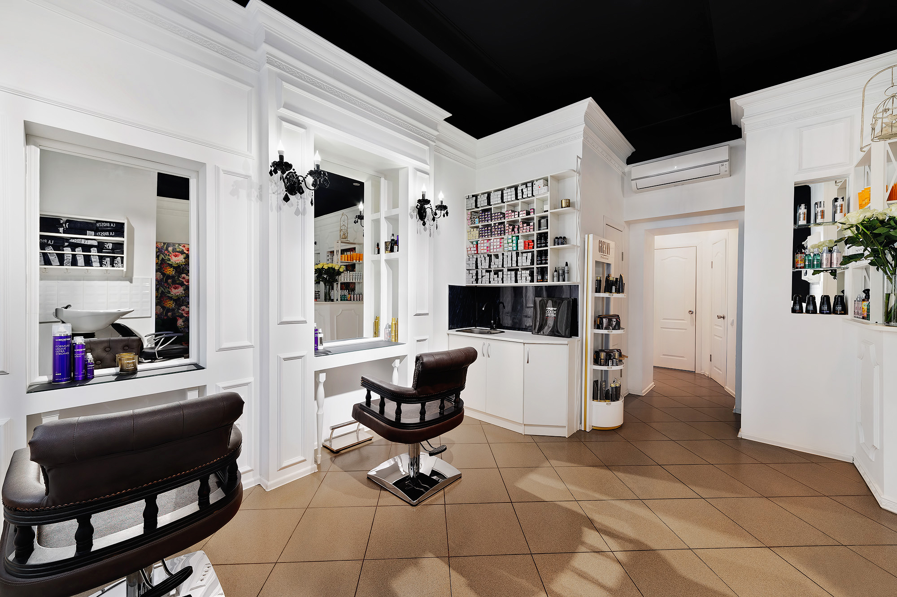
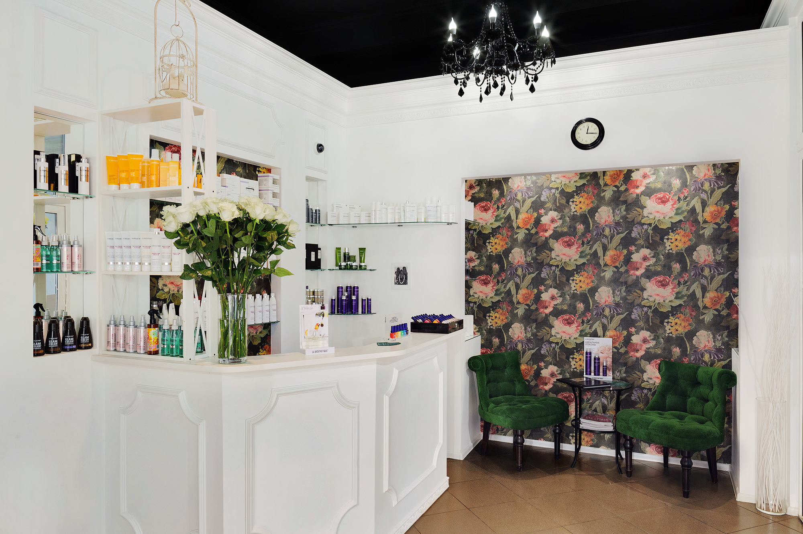
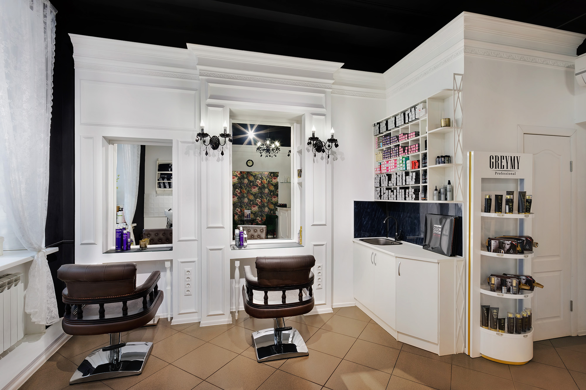
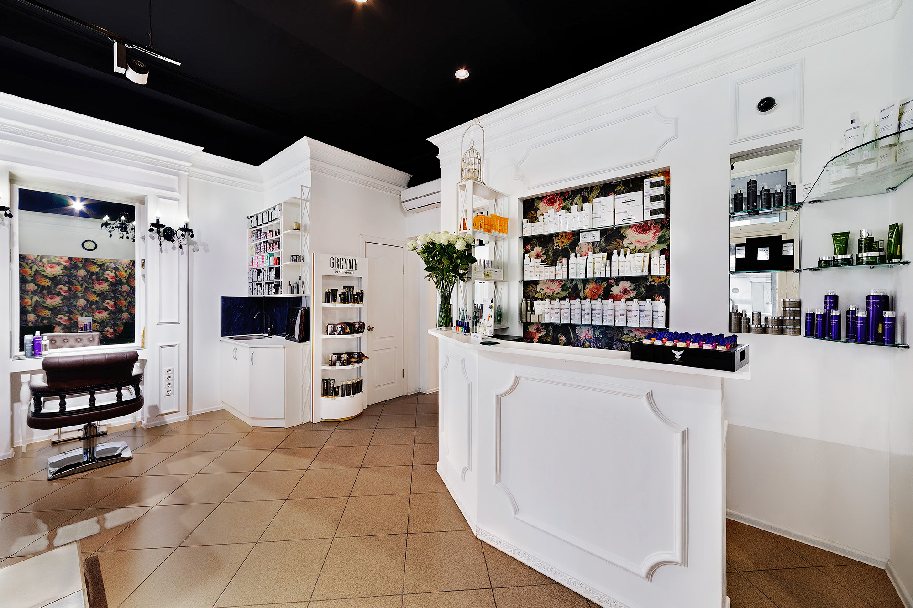
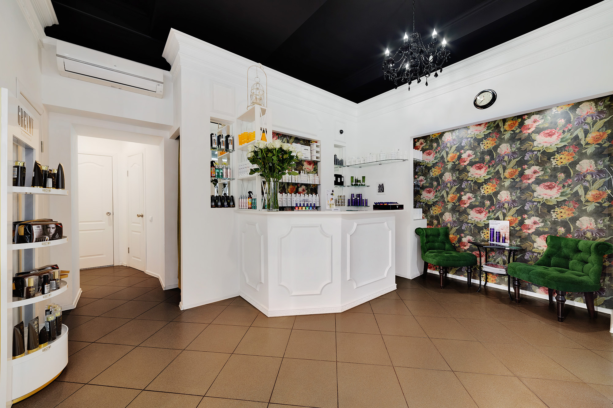
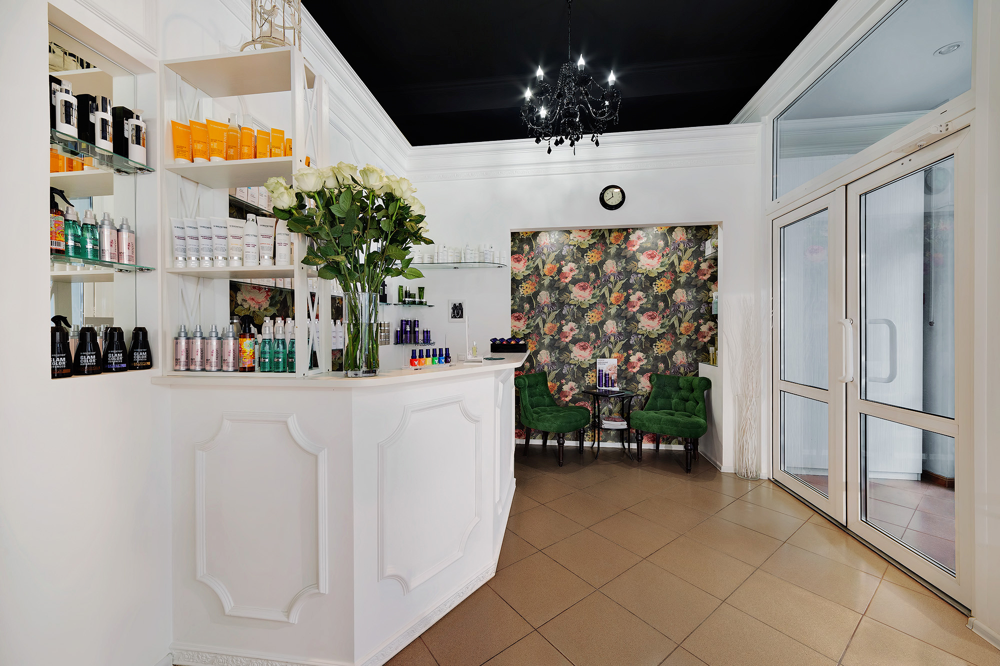

Стрижка «Капля»
Авторская форма Ксении Изумруд. Консультация перед работой, чтобы стрижка села по волосам и лицу.

Москва · Хохловский переулок, 15
Личное пространство красоты в центре. Авторская стрижка, цвет и форма — без лишней мишуры.

О студии
Автор стрижки «Капля» · hair boutique на Хохловском
Студии около десяти лет. Это камерный бутик в ЦАО: стригут и красят здесь, без конвейера и без пафоса. Большая часть гостей приходит за авторской стрижкой «Капля» — её придумала Ксения, и в студии её делают она и мастера, которых она обучила.
Форма рассчитана на жизнь без долгой укладки. Цвет, в том числе фирменный «чеховский соболь», собирают под человека, а не по шаблону.
Услуги
Цены уточняйте при записи. Прайс появится на сайте отдельно.

Авторская форма Ксении Изумруд. Консультация перед работой, чтобы стрижка села по волосам и лицу.

Фирменный «чеховский соболь», беби-блонд, холодный шоколад и сложный цвет.

Каре, короткие, градуированные и текстурные стрижки, мужские стрижки. Разбор образа до начала работы.
Пространство
Белый зал, чёрный потолок, изумрудные кресла и тишина без визуального шума.

Команда
01
Стилист, автор стрижки «Капля»
Автор фирменного окрашивания «чеховский соболь». Ведёт студию на Хохловском переулке.
02
Мастер студии
Освоила стрижку «Капля» и формулы окрашивания у Ксении. В студии около двух лет.
Контакты
Москва, Хохловский переулок, 15, 1 этаж. Метро Китай-город и Чистые пруды. Ежедневно 10:00–21:00, по записи.
Адрес Хохловский переулок, 15
Телефон +7 929 599-79-99
Telegram @ksenia_izumrud_salon
Instagram @ksenia_izumrud_salon